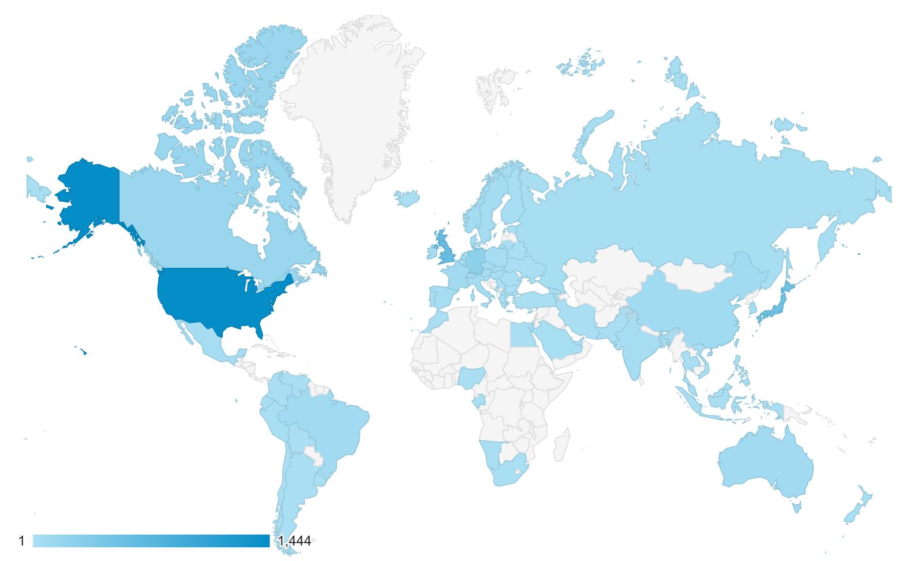

BachBot
Automatic stylistic composition
Feynman Liang
Tsingua University, 23 October 2017
Overview
- Music theory primer
- Corpus preparation
- Neural networks primer
- Results and analysis
- Musical Turing test
Music theory primer
Piano Roll
virtualpiano.net
Sheet Music
BWV 185.6
Corpus preparation
Transpose/Quantize


Handling Polyphony
- Question: How many chords can be constructed from 4 voices, each with 128 pitches?
- Answer: $O(128^4)$
Handling Polyphony
- Reduce vocabulary size by treating parts independently
-
Tokenize individual notes (instead of chords) in SATB order,
explicit frame delimiters "
|||"

START
(59, True)
(56, True)
(52, True)
(47, True)
|||
(59, True)
(56, True)
(52, True)
(47, True)
|||
(.)
(57, False)
(52, False)
(48, False)
(45, False)
|||
(.)
(57, True)
(52, True)
(48, True)
(45, True)
|||
END
Corpus statistics


Neural networks primer
Neurons

Feedforward Network

Memory Cell

Unrolling / Stacking

Sequential prediction
 https://karpathy.github.io/2015/05/21/rnn-effectiveness/
https://karpathy.github.io/2015/05/21/rnn-effectiveness/
Backprop

LSTM


Results and analysis
Dropout

Neuron activations

Model learns music theory

Sample compositions
Music Turing Test
Participants

Participants
Results

Results

Conclusion
-
Deep LSTM generative model for composing, completing, and generating
polyphonic music
- Integrated into Google Magenta
- Model appears to learn music theoretic without prior knowledge
-
Largest music Turing test to date with over 1779 participants
- Average performance on music Turing test only 7% better than random guessing
Thank You!
Questions? Ask now.
Interested in software engineering roles?
Email me:feynman@gigster.com